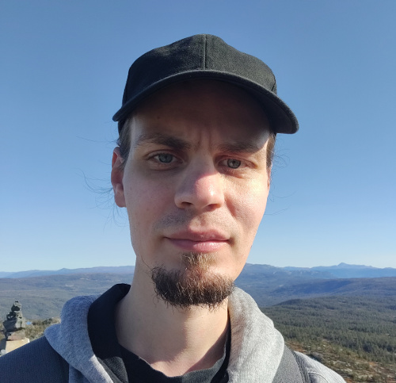

Marko Järvenpää 
D.Sc. (Tech.), Postdoctoral research fellow- University of Oslo
- Department of Biostatistics
- Sognsvannsveien 9, Domus Medica, 0372 Oslo, Norway
- Email: m.j.jarvenpaa [at] medisin.uio.no
- GitHub Google Scholar ResearchGate ArXiv
- Department of Biostatistics
About me
I am a postdoctoral research fellow at Department of Biostatistics, University of Oslo working with Prof. Jukka Corander.
I was a doctoral student in the Probabilistic Machine Learning and Machine Learning for Health research groups at Aalto University, Finland in 2016-2020. My advisors were Prof. Pekka Marttinen and Prof. Aki Vehtari.
In my doctoral thesis I developed a probabilistic, sample-efficient framework for ABC inference with expensive simulator-based statistical models. This inference framework is based on Gaussian process surrogate modelling and Bayesian decision theory, and could be called as "Bayesian ABC" in analogy with related probabilistic numerical methods such as Bayesian quadrature and Bayesian optimisation. I then also extended the framework for Bayesian inference when a limited number of possibly noisy evaluations of the likelihood function (or some approximation of it) can only be obtained due to computational constraints.
I was a visiting researcher at Harvard T.H. Chan School of Public Health during the autumn 2017. I obtained M.Sc. degree in applied mathematics from Tampere University of Technology, Finland in 2013.
Research interests
- Approximate Bayesian inference (especially Approximate Bayesian computation, also known as likelihood-free or simulation-based inference)
- Numerical methods based on Gaussian process surrogate modelling
- Decision making under uncertainty
Preprints
Järvenpää, M., Corander, J. (2021). Approximate Bayesian inference from noisy likelihoods with Gaussian process emulated MCMC. Arxiv preprint
Publications
Järvenpää, M., Corander, J. (2022). On predictive inference for intractable models via approximate Bayesian computation. Statistics and Computing, accepted for publication. Arxiv preprint
Järvenpää, M., Gutmann, M.U., Vehtari, A., and Marttinen, P. (2021). Parallel Gaussian process surrogate Bayesian inference with noisy likelihood evaluations. Bayesian Analysis, 16(1):147-178. Online Arxiv preprint
(Note that the previous version of this paper was titled Parallel Gaussian process surrogate method to accelerate likelihood-free inference.)
Järvenpää, M., Vehtari, A., and Marttinen, P. (2020). Batch simulations and uncertainty quantification in Gaussian process surrogate approximate Bayesian computation. In Proceedings of Conference on Uncertainty in Artificial Intelligence (UAI 2020). Online Arxiv preprint Poster
Karhu, K., Hilasvuori, E., Järvenpää, M., Arppe, L., Christensen, B.T., Fritze, H., Kulmala, L., Oinonen, M., Pitkänen, J.-M., Vanhala, P., Heinonsalo, J., and Liski J. (2019). Similar temperature sensitivity of soil mineral-associated organic carbon regardless of age. Soil Biology and Biochemistry, 136:107527. Online
Järvenpää, M., Sater, M.R.A., Lagoudas, K.G., Blainey, P.C., Miller, L.G., McKinnell, J.A., Huang, S.S., Grad, Y.H. and Marttinen P. (2019). A Bayesian model of acquisition and clearance of bacterial colonization incorporating within-host variation. PLoS Computational Biology, 15(4):e1006534. Online
Järvenpää, M., Gutmann, M.U., Pleska, A., Vehtari, A., and Marttinen, P. (2019). Efficient acquisition rules for model-based approximate Bayesian computation. Bayesian Analysis, 14(2):595-622. Online Arxiv preprint
Lintusaari, J., Vuollekoski, H., Kangasrääsiö, A., Skytén, K., Järvenpää, M., Marttinen, P., Gutmann, M., Vehtari, A., Corander, J., and Kaski, S. (2018). ELFI: Engine for Likelihood Free Inference. Journal of Machine Learning Research 19(16):1−7. Online Arxiv preprint
Järvenpää, M., Gutmann, M.U., Vehtari, A., and Marttinen, P. (2018). Gaussian process modeling in approximate Bayesian computation to estimate horizontal gene transfer in bacteria. Annals of Applied Statistics 12(4):2228–2251. Online Arxiv preprint
Potapov, I., Järvenpää, M., Åkerblom, M., Raumonen, P., Kaasalainen, M. (2017). Bayes Forest: A data-intensive generator of morphological tree clones. GigaScience 6(10):1-13.
Potapov, I., Järvenpää, M., Åkerblom, M., Raumonen, P., Kaasalainen, M. (2015). Data-based stochastic modeling of tree growth and structure formation. Silva Fennica 50(1).
Piché, R., Järvenpää, M., Turunen, E., Šimůnek, M. (2014). Bayesian analysis of GUHA hypotheses. Journal of Intelligent Information Systems. 42(1):47-73.
Workshop papers
Doctoral dissertation
Community involvement
Teaching
- Machine Learning: Advanced Probabilistic Methods, spring 2018, 2019, 2020, teaching assistant. Lectured by Prof. Pekka Marttinen.
- Bayesian Data Analysis, autumn 2016, teaching assistant. Lectured by Prof. Aki Vehtari.
- Supervisor of two B.Sc. theses and advisor of one M.Sc. thesis at Aalto University.
Last modified: 11 October 2022